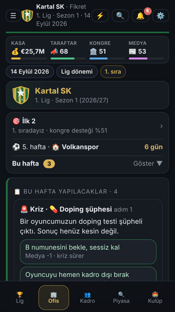
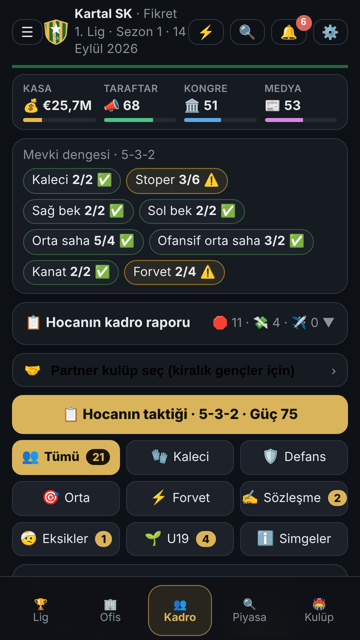
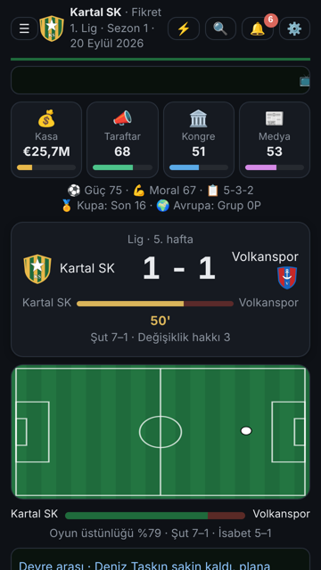

Başkan Koltuğu
Koltuk artık senin. Ama ne kadar oturacağın, vereceğin kararlara bağlı. Transfer, bütçe, kongre, taraftar ve seçim: kulübü sen yönet.
▶ Google Play'den indir


⚽
Kulübü yönet
Pazarlık yap, maaşı imzada belirle, gençleri altyapıdan çıkar.
💰
Kasayı ayakta tut
Sponsorlar, bilet fiyatları, krediler. Kasa boşalırsa kayyum kapıda.
🏛️
Koltuğunu koru
Kongre, yönetim kurulu, krizler ve seçim kampanyası.